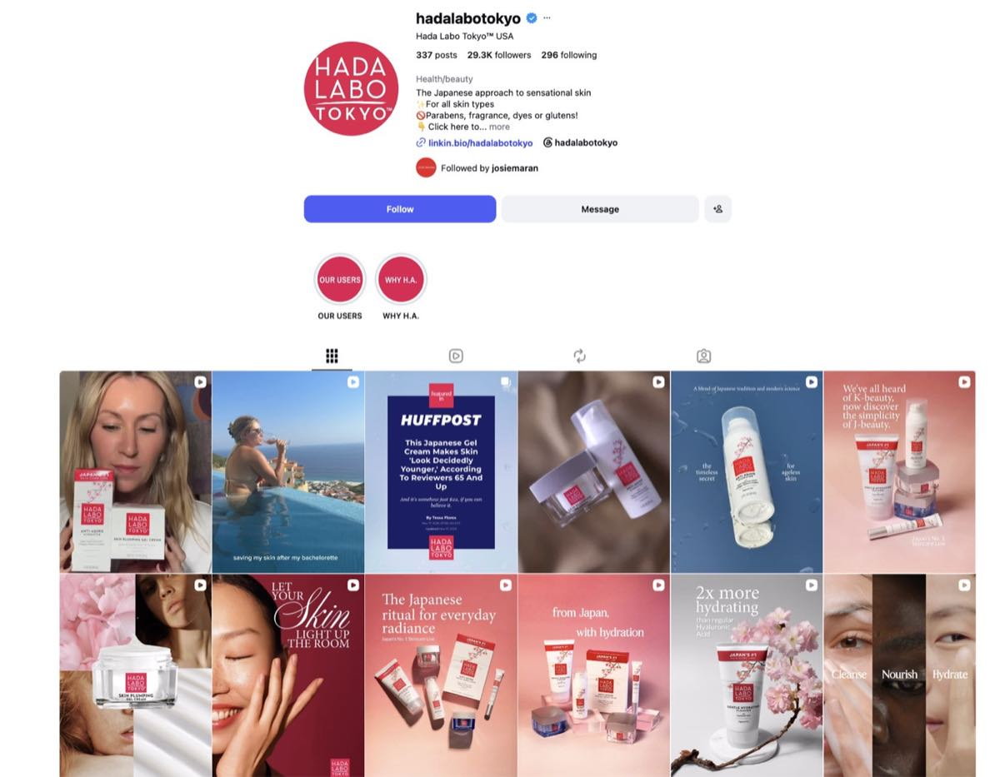

Direction 01
Layering Milk
Make the unusual lotion format the ritual. Product and ingredient education become secondary to the pressable, mochi-bounce sensation of skin hydrated layer by layer: premium, haptic and sensorial rather than sterile.
Three directions, one brand truth: making “layer by layer” visible.
A focused creative-direction engagement for Japan’s leading skincare heritage as it worked to become more distinctive, sophisticated and culturally legible in the U.S.
The agency arrived with deep market work, a strategic concept and three initial moodboards. The client’s response to all three was that they felt “too ordinary and basic.”
The unresolved question was not simply what the content should look like. It was how to turn Hada Labo Tokyo’s most ownable product truth—the way three forms of hyaluronic acid hydrate at different depths—into a brand world people could feel.
I was brought in to answer that question creatively, without discarding the useful strategy already completed.

Make the unusual lotion format the ritual. Product and ingredient education become secondary to the pressable, mochi-bounce sensation of skin hydrated layer by layer: premium, haptic and sensorial rather than sterile.
Own one ingredient story and make the filtration action visible. A crisp, science-forward system uses refraction, glow and depth to turn superior hyaluronic acid from a claim into an understandable visual device.
Elevate the brand through Asia-Pacific origin and underleveraged wild ingredients. De-emphasize packaging, expand beyond pink and invite a quiet-luxury customer into a world where pharmaceutical precision meets nature.
The deliverable did not attempt to finish production before a direction had been chosen. It made three meaningfully different futures tangible enough for a team to react to, align around and build.
This is the ideal Studio Hours assignment: a finite, consequential question answered with concentrated strategy, creative authorship and speed.
Explore Studio Hours →